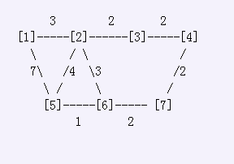

* Line 1: Line 1 contains five space-separated integers: C, P, PB, PA1, and PA2 * Lines 2..C+1: Line i+1 describes cowpath i by naming two pastures it connects and the distance between them: P1_i, P2_i, D_i
Bessie has two crisp red apples to deliver to two of her friends in the herd. Of course, she travels the C (1 <= C <= 200,000) cowpaths which are arranged as the usual graph which connects P (1 <= P <= 100,000) pastures conveniently numbered from 1..P: no cowpath leads from a pasture to itself, cowpaths are bidirectional, each cowpath has an associated distance, and, best of all, it is always possible to get from any pasture to any other pasture. Each cowpath connects two differing pastures P1_i (1 <= P1_i <= P) and P2_i (1 <= P2_i <= P) with a distance between them of D_i. The sum of all the distances D_i does not exceed 2,000,000,000. What is the minimum total distance Bessie must travel to deliver both apples by starting at pasture PB (1 <= PB <= P) and visiting pastures PA1 (1 <= PA1 <= P) and PA2 (1 <= PA2 <= P) in any order. All three of these pastures are distinct, of course. Consider this map of bracketed pasture numbers and cowpaths with distances:  If Bessie starts at pasture [5] and delivers apples to pastures [1] and [4], her best path is: 5 -> 6-> 7 -> 4* -> 3 -> 2 -> 1* with a total distance of 12.
* Line 1: Line 1 contains five space-separated integers: C, P, PB, PA1, and PA2 * Lines 2..C+1: Line i+1 describes cowpath i by naming two pastures it connects and the distance between them: P1_i, P2_i, D_i
* Line 1: The shortest distance Bessie must travel to deliver both apples
9 7 5 1 4
5 1 7
6 7 2
4 7 2
5 6 1
5 2 4
4 3 2
1 2 3
3 2 2
2 6 3
12
求翻译.........站内PM我吧.........